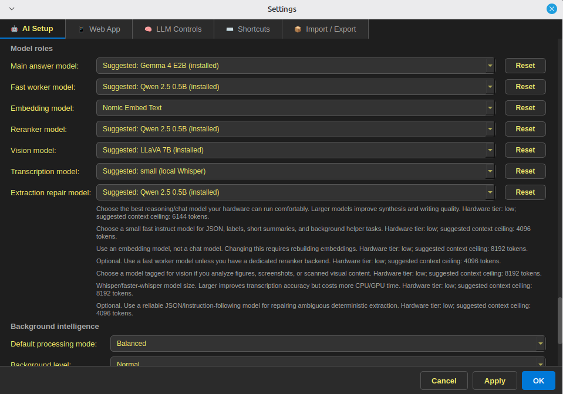
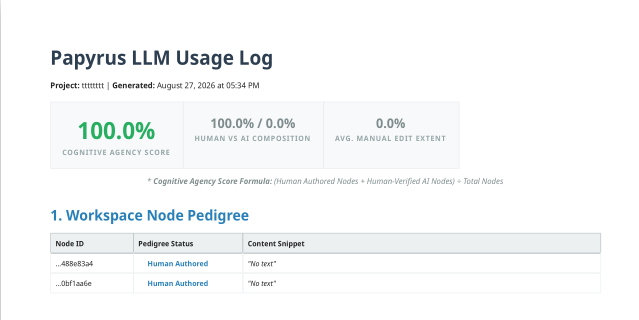

Design Principles
Principles kept in mind while building Papyrus
The below design principles were kept in mind while building Papyrus, to attempt to meet the goal of creating a useful, thoughtfully-built research tool. While these principles aim to limit certain concerns generally associated with AI use, they do not completely remove all of them.
Privacy and local control
- Concern
- Research collections may contain private notes, unpublished work, or context a researcher does not want transmitted by default.
- Design response
- Core project storage, parsing, indexing, retrieval, and configured model execution are intended to run locally. Network-capable actions are plugin-only and distinct from the main app.
- Tradeoff
- Local operation shifts setup, storage, model downloads, updates, and hardware requirements to the researcher. External search shortcuts and network-enabled extensions create separate boundaries that require review.
{kind=link}

Avoiding unnecessary computation
- Concern
- Generative processing can be used where simpler operations would be sufficient, adding resource use without improving the research task.
- Design response
- Papyrus divides work among conventional code, smaller task-specific models, and generative models. Processing modes and caches are intended to avoid unnecessary repetition.
- Tradeoff
- Rules and smaller models can still be inaccurate, and local computation still consumes electricity. No comparative energy, water, or emissions measurements are available.
Inspectable processing and source traceability
- Concern
- A polished answer can hide which passages were selected, which instructions shaped the result, or where an association came from.
- Design response
- Source locations, artifact identifiers, provenance fields, and recorded processing context keep application inputs and outputs inspectable. Prompts are fully visible and editable, and all LLM calls contain a trace button to view the exact prompting used. Source-linked controls make direct checking practical.
- Tradeoff
- Recorded context is not access to internal model reasoning. OCR errors, wrong associations, missing context, and stale records can still make a traceable result misleading.
Preserving researcher judgment
- Concern
- A tool can encourage acceptance of a generated interpretation before the source has been read or evaluated.
- Design response
- Papyrus centers source viewers, annotation, manual workspaces, editable analysis templates, and review states. Assisted analysis is a candidate structure to inspect, revise, or reject. Anything generated by GenAI is explicitly marked, and contains a button for a human to verify the content. An LLM log can also be exported that shows exactly what GenAI was used for, whether its output was verified, and what percentage of LLM generated output was manually edited by a human.
- Tradeoff
- No interface can ensure careful judgment. Review controls make verification easier; they do not remove bias or establish source quality. The verification button is simply a button the researcher presses, and not a guarantee they verified it themselves.
{kind=link}

What these principles require in practice
- A network boundary explicit in documentation and behavior.
- Stored quotations drawn from retained source text where linkage is supported, with room to correct extraction and location errors.
- Source-evaluation tools described as heuristic warning signals, not credibility verdicts. Missing metadata or list membership is not proof of unreliability.
- Bias tests described by their implemented scope. Current material is insufficient to verify how closely Bias Lab follows LIBRA, Measuring Bias of Large Language Model from a Local Context (arXiv:2502.01679).
Processing tiers are documented in How Processing Works; open implementation questions remain in Status & Limitations.